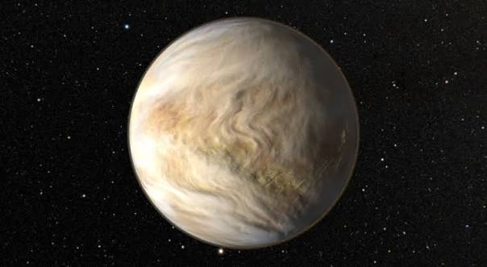

ดาวศุกร์ (Venus)

ขยับออกมาคือ ดาวศุกร์ ดาวเคราะห์ที่ได้ชื่อว่าเป็น "ฝาแฝดของโลก" ในด้านขนาดและมวล แต่กลับมีสภาพแวดล้อมที่แตกต่างราวฟ้ากับเหวและถูกขนานนามว่าเป็นนรกบนดิน ดาวศุกร์ถูกปกคลุมด้วยชั้นบรรยากาศที่หนาแน่นมาก ซึ่งเต็มไปด้วยแก๊สคาร์บอนไดออกไซด์สูงถึง 96.5% และมีเมฆกรดซัลฟิวริกหนาทึบห่อหุ้มอยู่ตลอดเวลา โครงสร้างนี้ทำให้เกิดปรากฏการณ์เรือนกระจกแบบกู่ไม่กลับ (Runaway Greenhouse Effect) กักเก็บความร้อนจากดวงอาทิตย์เอาไว้ไม่ให้แผ่รังสีกลับออกสู่อวกาศ ส่งผลให้ดาวศุกร์กลายเป็นดาวเคราะห์ที่ร้อนที่สุดในระบบสุริยะอย่างคงที่ทั้งกลางวันและกลางคืน โดยมีอุณหภูมิพื้นผิวสูงถึง 460 องศาเซลเซียส นอกจากนี้ความกดอากาศบนพื้นผิวดาวยังสูงกว่าโลกถึง 92 เท่า ซึ่งรุนแรงเทียบเท่ากับความดันใต้มหาสมุทรลึก 1 กิโลเมตรบนโลกมนุษย์